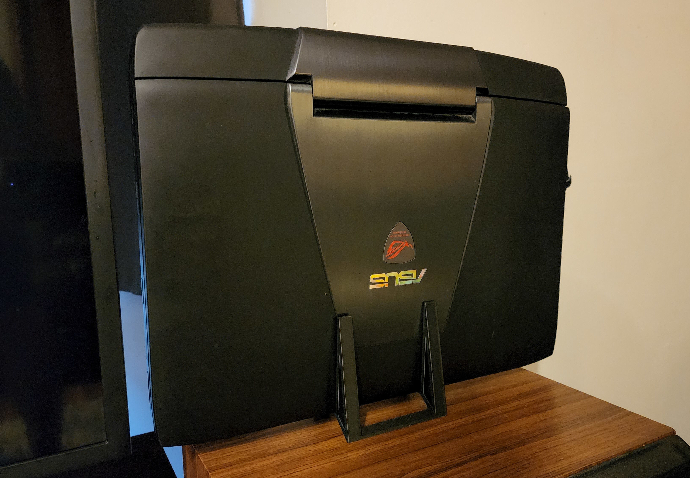

It all started when my old WiFi router started acting up. Annoyed yet
intrigued by the issue, I decided to dive into the world of network
hardware and software management to fix the problem. As a programming
student at the time, I had a 2014 HP laptop with a broken keyboard just
sitting around. Instead of seeing it as e-waste, I realized its
potential to be reborn as a network guardian for my home. The first
step? Installing OpnSense on it - a FreeBSD based open-source software
that delivers easy-to-use, robust firewall and routing capabilities.
Evolving the Home Lab
After finishing my programming course, I felt the need to deploy a
website from scratch - to bring into existence what was only theoretical
knowledge till then. To replace the laptop-as-router setup and optimize
my home network, I purchased a Raspberry Pi 4 B - a small but mighty
device perfect for this task. Installing OpenWRT on it, I transformed
this credit-card-sized computer into a fully capable router that could
handle my network traffic with ease.
The Server-side Story
With the network issue sorted and the Raspberry Pi working as a router,
the old laptop got a new lease of life - this time as a server. I
installed Ubuntu Server on it and set about constructing my website,
brick by digital brick. However, I soon realized that containerization
would simplify both development and maintenance, making the transition
between my development laptop and the server a breeze. Enter Docker and
Portainer: these tools helped me create and manage my containers
efficiently, and the difference was night and day!
Current Status
Today, my website,
Dominickp.com, stands proudly hosted on my home server. But it's not alone.
Accompanying it is a host of robust applications and services that
amplify the capabilities of my home lab:
Uptime Kuma: A beautiful, self-hosted monitoring tool
that helps me keep track of my server's health and performance.
Jellyfin: This open-source media system is my go-to
for organizing and streaming my multimedia content.
Nextcloud: File sharing is a breeze with Nextcloud.
It offers a safe, private, and convenient solution for syncing and
sharing my files.
Heimdall Application Dashboard: This elegant solution
helps me keep all my applications organized under one roof. It acts as
a homepage for all the apps running on my server, making access quick
and straightforward.
CasaOS: A relatively new player in my lab, CasaOS
simplifies my home cloud and smart home experience. It's an innovative
IoT (Internet of Things) home server OS that provides a unified
platform for smart home management.
Portainer: This powerful open-source tool allows me
to manage my Docker environments with ease, making containerization an
effortless endeavor.
Cloudflare Tunnel
To overcome the challenge of a dynamic IP address issued by my ISP, I've
set up a Cloudflare tunnel. This keeps my external connections running
smoothly, no matter how many times my ISP decides to shuffle the IP
deck.
What's Next?
Looking towards the future, I'm considering dipping my toes into the realm
of hypervisors. Proxmox is on my radar, although a pesky system clock
error on the laptop has been causing some initial hiccups. Perhaps a
simple fix like replacing the clock battery will resolve the issue and
open the doors to this next chapter. Stay tuned as I continue my home lab
journey, learning, growing, and sharing my knowledge along the way. From a
broken router to hosting my own website and services, it's been an
exciting adventure - and this is just the beginning! Want to embark on
your own home lab adventure? Feel free to explore the resources on this
site or get in touch. Together, we can demystify the tech and uncover the
fun in these fantastic projects.
My Home Lab's New Evolution
So, I’ve made a few changes since the last update, and I'm excited to
share them with you. Funny enough, I find myself with another laptop with
a broken keyboard - this time a 2015 ASUS ROG gaming laptop with a i7
4720HQ CPU and 24GB ram with a 965M Nvidia graphics card. I wonder if it's
a sign from the universe that I'm meant to breathe new life into discarded
tech. 🤣

Stepping Up with Proxmox
I finally took the plunge and installed Proxmox on the ASUS ROG. Instead
of transferring over the old Ubuntu Server, I felt the urge to start
fresh, giving me the opportunity to refine my setup. A key improvement
I’ve made is in the networking realm: I’ve established a Docker network
and assigned all my containers static IP addresses. This straightforward
change made a world of difference in streamlining my setup, especially
when interfacing with the Cloudflare tunnel. No more constant IP updates
after every reboot!
For the Gamers
To add a splash of fun to my home lab, I’ve spun up servers for "7 Days to
Die" and "GTA 5". Now, my friends and I have a dedicated playground for
our gaming sessions. It’s been a blast hosting these, and it’s just
another testament to what you can achieve with a home lab.
Windows in My Home Lab? Yes!
While I’m a huge fan of open-source platforms, I must admit some
applications just feel more at home on Windows. So, I’ve allocated a slice
of my resources to a Windows 10 VM. It’s strictly business (okay, maybe a
little play), serving some applications that either only work on Windows
or just perform better on it.
Security & Accessibility
With my expanding suite of services and tools, secure yet convenient
remote access became a necessity. I'm currently in the process of setting
up a WireGuard VPN. This way, accessing my home network and all its
offerings will be seamless and secure, even when I’m miles away.
The Versatility of VS Code Server
VS Code, the popular code editor from Microsoft, isn't just confined to
desktop environments. Using a linuxserver.io docker container I set up a
VS Code Server on my Ubuntu server. This has completely revolutionized the
way I work on projects!
By setting up VS Code Server, I've gained several advantages:
Power Consumption: Running intensive tasks on a
server rather than a laptop means significant savings in battery life,
especially when on the go.
Performance:
My Ubuntu server, being more powerful than many standard laptops or
mobile devices, can handle heavier workloads, compile tasks, or run
resource-intensive applications effortlessly.
Consistency: No matter which device I connect
from, be it a high-end workstation or a modest mobile device, I have a
consistent development environment ready and waiting.
Accessibility:
All I need is an Internet connection, and I can continue my work from
anywhere in the world, accessing all my tools, extensions, and
configurations exactly how I left them.
This setup has essentially given me a portable, high-powered, and
consistent development environment without being tethered to any specific
hardware. Now, even if I'm armed just with a tablet or a lightweight
laptop, I can tap into the full power of my home server, code as if I'm on
a powerful workstation, and save my device's resources for other tasks.
With the combination of the Ubuntu server's reliability and VS Code's
flexibility, my development workflow is smoother, faster, and more
versatile than ever. If you're looking to break the confines of
traditional development environments, I'd highly recommend giving VS Code
Server a shot!
What's Next?
The adventure deepens. Next on my list? Channeling the power of the 965M
GPU into my Windows 10 VM for some Parsec remote gaming. While the 965M
may not be the titan of graphics, it packs enough punch to handle most
contemporary games—even if at more modest settings. Compared to my main
laptop's AMD 5500u, the 965M stands out as a gaming powerhouse, promising
not just enhanced performance but also a significant boost in battery
life.
From those early days of wrestling with a fickle router, my journey has
evolved into crafting a versatile home server system. The real joy,
though? Sharing these tales of trials and triumphs with you. Perhaps it
might spark your own voyage into the tech realm. So, here's to uncovering
new gems, overcoming fresh challenges, and fostering an insatiable thirst
for knowledge. Browse the resources here, pose questions, or relay your
tales. Together, let’s demystify tech and inject a hefty dose of fun into
the process!